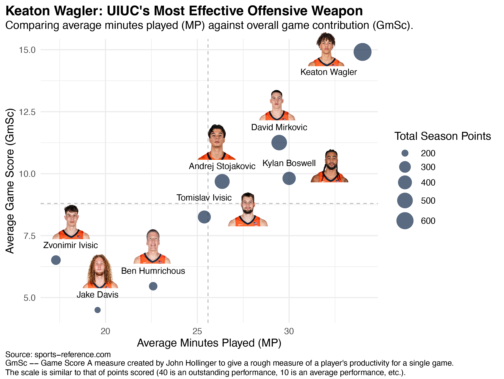
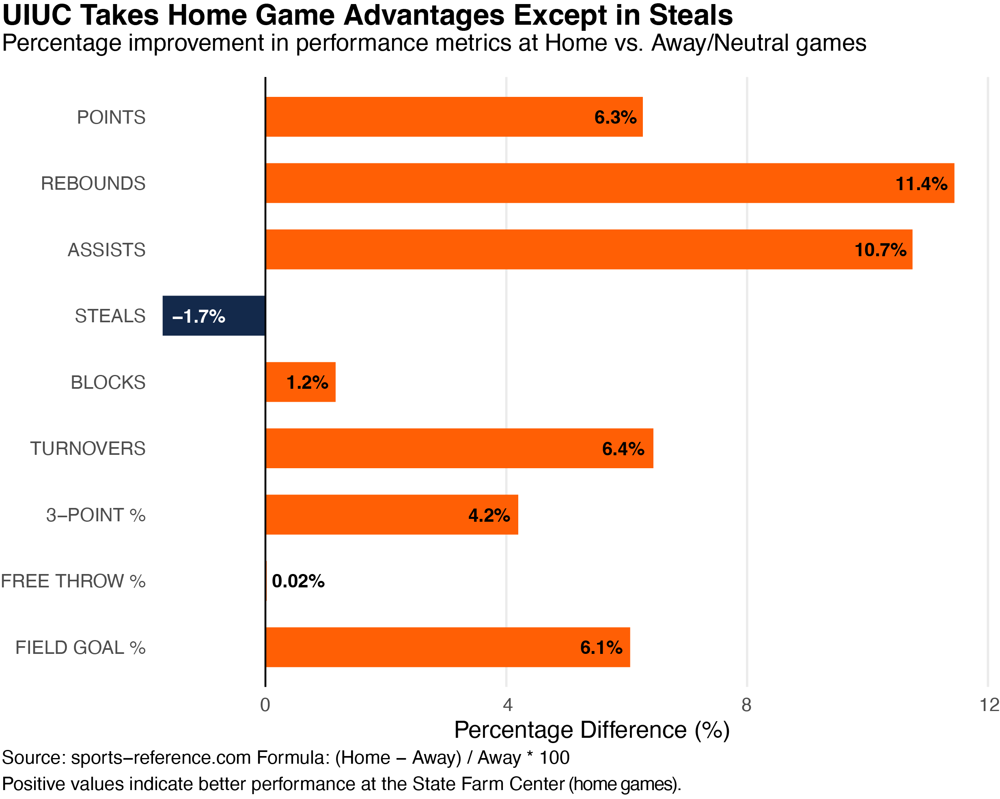
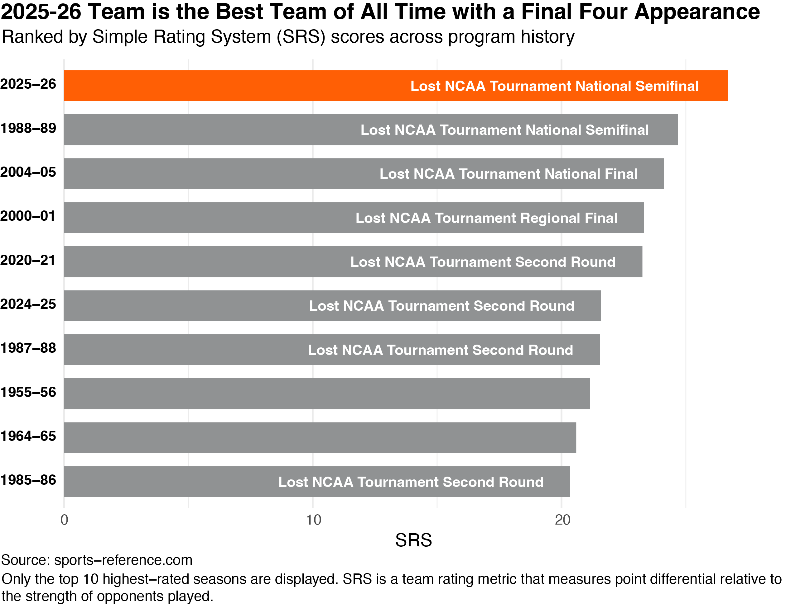

Section 1: Individual Impact & Workload Analysis
The primary task of the analysis is to identify the core driving force of the team. In a lineup dominated by freshmen, maintaining high efficiency while ensuring a high workload is a huge challenge.

As shown in chart above, I compared the average minutes played (MP) with the average game score contribution (GmSc). The results indicate that Keaton Wagler firmly occupies the top right "high-load, high-impact" elite quadrant. Not only does he lead the team in average minutes played (close to 35 minutes), but his GmSc also remains at an extremely high level of around 15.0. The size of the bubbles (total points scored in the season) visually demonstrates that he is the team's undisputed offensive cornerstone. Although players like David Mirkovic and Andrej Stojakovic provided necessary support on the court, Keaton Wagler's "consistent and efficient" performance answered my first research hypothesis: UIUC's success is indeed highly "Wagler-dependent". He is not only the offensive finisher but also the tactical anchor of the entire team, providing the competitive ceiling needed for this inexperienced squad to break into top-tier events. Keaton Wagler is also one of the freshmen who can score 40+ points this season. Multiple draft prediction websites have ranked him within the lottery range.
Section 2: Home-Court Advantage & Venue Resilience
Basketball games are never played in a vacuum, especially in the highly competitive Big Ten Conference, where playing on the road often means facing immense pressure. I calculated the percentage differences in various metrics between home and away games to quantify what is known as the "home court advantage."

The findings in chart above are highly enlightening. The home environment has the most significant impact on rebounds (11.4%) and assists (10.7%). This confirms that the passionate atmosphere at the State Farm Center can indeed significantly boost players' enthusiasm in rebounding and ball sharing. Meanwhile, the free throw percentage (0.02%) shows a strong immunity to the environment with almost no fluctuation, reflecting the solid psychological quality of this young team. It is worth noting that steals (-1.7%) is the only metric that slightly declined at home. This minor drop might suggest that the team prefers to leverage their height advantage for a more stable zone defense at home rather than taking risks with steals. The increase in home turnovers (6.4%), on the other hand, indicates that the team tends to play a more aggressive and fast-paced offense at home. This normalized analysis of environmental impact explains why they remain competitive in the neutral court.
Section 3: Historical Standing & SRS Performance
Finally, we need to place this team in the context of the University of Illinois' basketball history during almost 80 years.

Through the SRS (Simple Rating System) metric, which combines margin of victory and strength of schedule (SOS), Figure 3 reveals a fact worthy of being recorded in history: the team in the 2025-26 season ranked first in SRS score in the team's history. Even when compared to the legendary 2004-05 season, which claimed the runner-up position in the nation, or the renowned "Flyin' Illini" of 1988-89, the 2025-26 season demonstrated a superior dominance in the face of the modern high-intensity schedule. Although they narrowly lost in the national semi-finals, the statistics prove that this team, led by freshmen, has reached a competitive height in the school's history.
Conclusion:
This analysis has taken us from the micro-level of individual player performance to a macro-level overview of the team's history. The data validates the intuition I felt from the stands: the beauty of sports exists not only in the games on the court, but also in the logical framework behind of the games. With a record-breaking performance, this young Illinois squad has set a brand new benchmark in the 2025–26 season.
Source: Basketball-Reference & NCAA Official Statistics